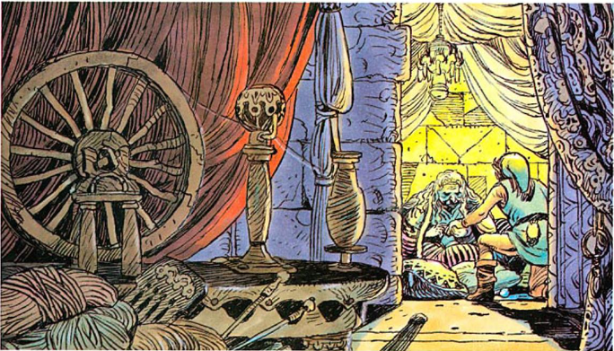

Zelda II: The Adventure of Link
 The Adventure of Link takes place several years after The Legend of Zelda. An older, taller and perhaps wiser Link has seen the country prosper and villages spring up.
But peace is a fragile commodity in Hyrule and history has a way of repeating itself. On his second adventure, Link becomes a master of magic as well as a fighter. He
visits many towns, fights new enemies and travels across the sea.
The Adventure of Link takes place several years after The Legend of Zelda. An older, taller and perhaps wiser Link has seen the country prosper and villages spring up.
But peace is a fragile commodity in Hyrule and history has a way of repeating itself. On his second adventure, Link becomes a master of magic as well as a fighter. He
visits many towns, fights new enemies and travels across the sea.
